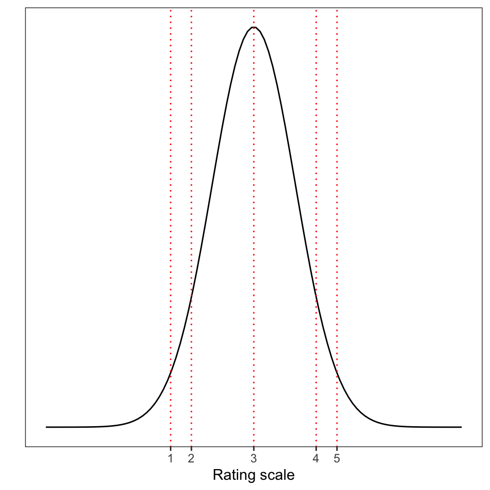
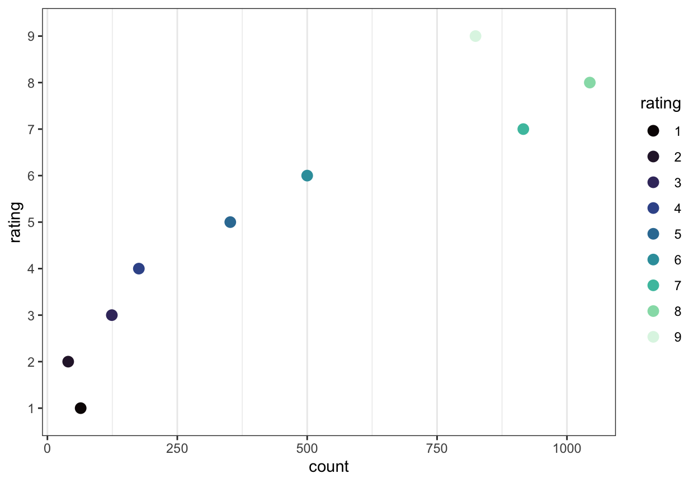

7 Introduction to Ordinal Models
This chapter is under construction
7.1 Motivations: working with ordinal outcomes
Ordinal data are very common in psychological science. Often, we will encounter ordinal data recorded as responses to Likert-style items in which the participant is asked to indicate a response on an ordered scale ranging between two end points (Bürkner & Vuorre, 2019; Liddell & Kruschke, 2018). An example of a Likert question item might be: How well do you think you have understood this text? (Please check one response) where the participant must respond by checking an option, given 5 options ranging from 1 (not well at all) to 5 (very well). The critical characteristics of such responses are that:
- The responses are ordered, as indicated by the number labels;
- Response types are categorical or qualitative, not numeric.
We will be working with study data in which the outcome that is the target for our analyses comprise responses to questions designed to elicit ratings. Ordinal data may, however, also derive from situations in which ordered categorical responses do not derive from ratings items (we will look briefly at sequential responses, Bürkner & Vuorre, 2019).
The challenge we face is that we will aim to develop skills in using ordinal models when, in contrast, most psychological research articles will report analyses of ordinal data using conventional methods like ANOVA or linear regression. We will work to understand why ordinal models are better. We will learn that applying conventional methods to ordinal data will, in principle, involve a poor account of the data and, in practice, will create the risk of producing misleading results. And we will learn how to work with and interpret the results from ordinal models with or without random effects.
In our work in this chapter, we will rely extensively on the ideas set out by Liddell & Kruschke (2018), see Section 7.13.
7.2 The key idea to get us started
Ordinal responses are labelled with numbers but ordinal data are not numeric.
Ordinal responses are coded with numeric labels. These number labels may indicate order but we do not know that the difference between e.g. response options 1 versus 2 is the same as the difference between 2 versus 3 or 3 versus 4. Ordinal data contrast with metric data (Liddell & Kruschke, 2018) which are recorded on scales for which we assume both order and equal intervals. When researchers apply metric models to ordinal data, they incorrectly assume that the response options e.g. in ratings are separated by equal intervals. Yet, in a review of the 68 recently articles that mentioned the term “Likert” in a sample of highly ranked Psychology journals, Liddell & Kruschke (2018) found that ordinal data were treated as metric and the articles presented results from metric models.
One way to think about ordinal data is that often (but not always) ratings may be understood to come from psychological processes in which the participant, in response to the Likert question, divides some latent (unobserved) psychological continuum or scale into categories in order to select a response option.
Imagine, for example, that you have been asked the question “How well do you understand this text? (on a scale from 1-5)”. Presumably, to answer this question, you will have to choose a response based on where you think you are on your unobserved measure of your understanding. You may be able to evaluate the cohesion, or some other internal measure, of your understanding of the text. Simplifying a bit, we might assume that your internal measure of understanding is associated with a normal probability distribution so that it peaks over some value (e.g., 3) of the strength of understanding though other values are possible. As Figure 7.1 suggests, a participant in this common situation will have to map the internal measure (the latent scale, e.g., of understanding) to a number from the response options you are given (e.g., rating scale values ranging 1-5). But there is no reason to suppose that your internal measure of your understanding is divided into an ordered metric scale.

In conducting analyses of ordinal data with ordinal models, we often fit models that describe the cumulative probability that a rating response is located at some value (typically, understood in terms of threshold) on an underlying latent continuum. In ordinal models, we do not assume that the ordinal responses map to equally spaced intervals on the latent scale: the values or thresholds at which the continuum are split are to be estimated.
In applying metric models to ordinal data, we do assume that intervals are equal though this assumption is unlikely to be true or, at least, is unlikely to be verifiable. This faulty assumption has consequences because the mis-application of metric models (e.g. ANOVA, linear models) to ordinal data is both commonplace and risky. As Liddell & Kruschke (2018) demonstrate, mis-applying metric models to ordinal data can result in false positives (detecting a difference when none is present), false negatives (missing a difference that is present) and inversions (swapping the difference so that it appears to be positive instead of negative or vice versa). These kinds of misrepresentions cannot be avoided and are not fixed by, for example, averaging ratings scales data together.
7.3 Targets
- Understand practically the reasons for using ordinal models when we analyze ordinal outcome variables, ?sec-ordinal-practical-understanding.
- Practice running ordinal models with varying random effects structures.
- Practice reporting the results of ordinal models, including through the use of prediction plots.
7.4 Study guide
I have provided a collection of materials you can use. Here, I explain what they are and how I suggest you use them.
1. Chapter: 05-ordinal
1.1. I have written this chapter to discuss the main ideas and set out the practical steps you can follow to start to develop the skills required to work with ordered categorical outcomes i.e. ordinal data using ordinal models.
1.2. The practical elements include data tidying, visualization and analysis steps.
1.3. You can read the chapter, run the code, and do the exercises.
- Read in the example dataset.
- Experiment with the .R code used to work with the example data.
- Run ordinal models of demonstration data.
- Run ordinal models of alternate data sets.
- Review the recommended readings (Section 7.13).
2. Practical workbook materials
2.1 In the following sections, I describe the practical steps, and associated resources, you can use for your learning.
7.5 The data we will work with:
We will be working, at first, with a sample of data collected as part of the Clearly understood: health comprehension project (Davies, Ratajczak, Gillings, Chadwick & Gold). These data are unpublished.
7.5.1 Study information
7.5.1.1 Introduction: the background for the study
Our interest, in conducting the project, lies in identifying what factors make it easy or difficult to understand written health information. In part, we are concerned about the processes that health providers or clinicians apply to assure the effectiveness of the text they produce to guide patients or carers, for example, in taking medication, in making treatment decisions, or in order to follow therapeutic programmes.
It is common, in the quality assurance process in the production of health information texts, that text producers ask participants in patient review panels to evaluate draft texts. In such reviews, a participant may be asked a question like “How well do you understand this text?” This kind of question presents a metacognitive task: we are asking a participant to think about their thinking. But it is unclear that people can do this well or, indeed, what factors determine the responses to such questions (Dunlosky & Lipko, 2007).
For these reasons, we conducted studies in which we presented adult participants with sampled health information texts (taken from health service webpages) and, critically, asked them to respond to the question:
How well do you think you have understood this text? (Please check one response)
For each text, in response to this question, participants were asked to click on one option from an array of response options ranging from (1) Not well at all to (9) Extremely well. The data we collected in this element of our studies comprise, clearly, ordinal responses. Thus, we may use these data to address the following research question.
- What factors predict self-evaluated rated understanding of health information.
7.5.1.2 Participants
We will work with a sample of participant data drawn from a series of Lancaster University undergraduate dissertation studies connected to the Clearly understood project. In these studies, we collected data from 202 participants on a series of measures (Section 7.5.1.3) of vocabulary knowledge, health literacy, reading strategy, as well as responses to health information texts. The distributions of participants’ scores on each of a range of attribute variables
![The figure presents a grid of histograms indicating the distribution of (x-axis) scores on a range of participant attribute variables. The grid includes histograms of the distributions of: self-rated accuracy; vocabulary (SHIPLEY); health literacy (HLVA); reading strategy (FACTOR3); age (years); gender; education, and ethnicity. The plots indicate: (1.) most self-rated accuracy scores are high (over 6); (2.) many participants with vocabulary scores greater than 30, a few present lower scores; (3.) health literacy scores centered on 8 or some, with lower and higher scores; (4.) a skewed distribution of reading strategy scores, with many around 20-40, and a tail of higher scores; (5.) most participants are 20-40 years of age, some older; (6.) many more female than male participants, very few non-binary reported; (7.) many more participants with higher education than further, very few with secondary; and (8.) many White participants (ONS categories), far fewer Asian or Mixed or Black ethnicity participants.](05-ordinal_files/figure-html/fig-histogram-grid--1.png)
The plots indicate:
- most self-rated accuracy scores are high (over 6);
- many participants with vocabulary scores greater than 30, a few present lower scores;
- health literacy scores centered on 8 or some, with lower and higher scores;
- a skewed distribution of reading strategy scores, with many around 20-40, and a tail of higher scores;
- most participants are 20-40 years of age, some older;
- many more female than male participants, very few non-binary reported;
- many more participants with higher education than further, very few with secondary;
- and many White participants (Office of National Statistics categories), far fewer Asian or Mixed or Black ethnicity participants.
7.5.1.3 Stimulus materials and data collection procedure
We collected data through an online survey administered through Qualtrics.
We used the Shipley vocabulary sub-test (Shipley et al., 2009) to estimate vocabulary knowledge.
We used the Health Literacy Vocabulary Assessment (HLVA, Ratajczak, 2020; adapted for online presentation, Chadwick, 2020) to estimate health literacy.
We used an instrument drawn from unpublished work by Calloway (2019) to assess the approach participants took to reading and understanding written information.
We presented participants with a sample of 20 health information texts. In the data collection process for this dataset, participants were recruited in multiple different studies. In each study, any one participant was presented with a randomly selected subset of the total of 20 texts.
We asked participants to rate their level of understanding of the health-related texts that we presented in the study. We used a nine-point judgment scales because they have been found to outperform alternative scales with fewer categories in terms of criterion validity, internal consistency, test-retest reliability, and discriminating power (Preston & Colman, 2000).
We recorded participants’ demographic characteristics: gender (coded: Male, Female, non-binary, prefer not to say); education (coded: Secondary, Further, Higher); and ethnicity (coded: White, Black, Asian, Mixed, Other).
7.5.2 Locate and download the data file
You can download the 2021-22_PSYC304-health-comprehension.csv file holding the data we analyse in this chapter by clicking on the link.
7.5.3 Read-in the data file using read_csv
I am going to assume you have downloaded the data file, and that you know where it is. We use read_csv to read the data file into R.
health <- read_csv("2021-22_PSYC304-health-comprehension.csv",
na = "-999",
col_types = cols(
ResponseId = col_factor(),
rating = col_factor(),
GENDER = col_factor(),
EDUCATION = col_factor(),
ETHNICITY = col_factor(),
NATIVE.LANGUAGE = col_factor(),
OTHER.LANGUAGE = col_factor(),
text.id = col_factor(),
text.question.id = col_factor(),
study = col_factor()
)
)Notice that we use col_types = cols(...) to require read_csv() to class some columns as factors.
Importantly, we ask R to treat the rating variable as a factor with rating = col_factor().
In the practical work we do, we will be using functions from the {ordinal} library to model ordinal data.
- In using these functions, we need ask R to treat the ordinal outcome variable as a factor.
7.5.4 Inspect the data
It is always a good to inspect what you have got when you read a data file in to R. Here, what may most concern us is the distribution of observed responses on the rating scale (responses to the “How well do you understand?” question). Figure 7.3 is a dot plot showing the distribution of ratings responses. The Likert-style questions in the surveys asked participants to rate their level of understanding of the texts they saw on a scale from 1 (not well) to 9 (extremely well). The plot shows the number of responses recorded for each response option, over all participants and all texts.
health <- health %>% mutate(rating = fct_relevel(rating, sort))
health %>%
group_by(rating) %>%
summarise(count = n()) %>%
ggplot(aes(x = rating, y = count, colour = rating)) +
geom_point(size = 3) +
scale_color_viridis(discrete=TRUE, option = "mako") + theme_bw() +
theme(
panel.grid.major.y = element_blank() # No horizontal grid lines
) +
coord_flip()
The plot indicates that most participants chose response options 5-9, while very few rated their understanding at the lowest levels (options 1-4). Interestingly, many ratings responses around 7-8 were recorded: many more than responses at 5-6.
In analyzing these data, we will seek to estimate what information available to us can be used to predict whether a participant’s rating of their understanding is more likely to be, say, 1 or 2, 2 or 3 … 7 or 8, 8 or 9.
One practical way to think about the estimation problem when working with ratings-style ordinal data is this:
- What factors move or how do influential factors move the probability that the ordinal response is a relatively low or relatively high order response option?
- In doing this, we do not have to assume that rating scale points map to equal sized intervals on the underlying latent scale where the scale may be an unobserved psychological continuum (like understanding).
Here, we mostly have information on participant attributes and some information on text properties to do our prediction analyses. In other studies, we may be using information about experimental conditions, or selected groups of participants to estimate effects on variation in ratings responses.
7.6 Tidy the data
The Clearly understood health comprehension project dataset is tidy (Section 4.6.2.1):
- Each variable has its own column.
- Each observation has its own row.
- Each value has its own cell.
However, there are aspects of the data structure or properties of the dataset variables that will cause inefficiencies or problems in later data analysis if we do not fix them first.
You can see what we have if you look at the results we get from using summary() and str() to inspect the dataset.
summary(health) ResponseId AGE GENDER
R_sKW4OJnOlidPxrH: 20 Min. :18.0 Female :2900
R_27paPJzIutLoqk8: 20 1st Qu.:20.0 Male :1120
R_1nW0lpFdfumlI1p: 20 Median :27.0 Prefer-not-to-say: 20
R_31ZqPQpNEEapoW8: 20 Mean :34.3
R_2whvE2IW90nj2P7: 20 3rd Qu.:50.0
R_3CAxrri9clBT7sl: 20 Max. :81.0
(Other) :3920
EDUCATION ETHNICITY NATIVE.LANGUAGE OTHER.LANGUAGE
Further :1780 Asian: 680 English:2720 NA :2720
Higher :1800 White:3260 Other :1320 Polish : 580
Secondary: 460 Other: 40 Cantonese : 280
Mixed: 60 Chinese : 120
Portuguese: 60
polish : 60
(Other) : 220
ENGLISH.PROFICIENCY SHIPLEY HLVA FACTOR3
Length:4040 Min. :15.00 Min. : 3.000 Min. :17.00
Class :character 1st Qu.:30.00 1st Qu.: 7.000 1st Qu.:45.00
Mode :character Median :34.00 Median : 9.000 Median :49.00
Mean :32.97 Mean : 8.564 Mean :49.03
3rd Qu.:37.00 3rd Qu.:10.000 3rd Qu.:55.00
Max. :40.00 Max. :13.000 Max. :63.00
rating response RDFKGL study
8 :1044 Min. :0.0000 Min. : 4.552 cs: 480
7 : 916 1st Qu.:1.0000 1st Qu.: 6.358 jg:1120
9 : 824 Median :1.0000 Median : 8.116 ml: 720
6 : 500 Mean :0.8064 Mean : 7.930 rw:1720
5 : 352 3rd Qu.:1.0000 3rd Qu.: 9.413
4 : 176 Max. :1.0000 Max. :13.278
(Other): 228
text.id text.question.id
studyone.TEXT.37: 344 studyone.TEXT.37.CQ.1: 86
studyone.TEXT.39: 344 studyone.TEXT.37.CQ.2: 86
studyone.TEXT.72: 344 studyone.TEXT.37.CQ.3: 86
studyone.TEXT.14: 344 studyone.TEXT.37.CQ.4: 86
studyone.TEXT.50: 344 studyone.TEXT.39.CQ.1: 86
studyone.TEXT.10: 224 studyone.TEXT.39.CQ.2: 86
(Other) :2096 (Other) :3524 You should be used to seeing the summary() of a dataset, showing summary statistics of numeric variables and counts of the numbers of observations of data coded at different levels for each categorical or nominal variable classed as a factor.
Using the str() function may be new to you and, as you can see, the output from the function call gives you a bit more information on how R interprets the data in the variable columns. You can see that each variable is listed alongside information about how the data in the column are interpreted (as Factor or num numeric). Where we have columns holding information on factors there we see information about the levels.
Recall that for a categorical or nominal variable e.g. ETHNICITY, provided R interprets the variable as a factor, each data value in the column is coded as corresponding to one level i.e. group or class or category (e.g., we have ETHNICITY classes "Asian" etc.) Recall, also, that at the data read-in stage, we instructed R how we wanted it to interpret each column using col_types = cols().
str(health)tibble [4,040 × 17] (S3: tbl_df/tbl/data.frame)
$ ResponseId : Factor w/ 202 levels "R_sKW4OJnOlidPxrH",..: 1 1 1 1 1 1 1 1 1 1 ...
$ AGE : num [1:4040] 20 20 20 20 20 20 20 20 20 20 ...
$ GENDER : Factor w/ 3 levels "Female","Male",..: 1 1 1 1 1 1 1 1 1 1 ...
$ EDUCATION : Factor w/ 3 levels "Further","Higher",..: 1 1 1 1 1 1 1 1 1 1 ...
$ ETHNICITY : Factor w/ 4 levels "Asian","White",..: 1 1 1 1 1 1 1 1 1 1 ...
$ NATIVE.LANGUAGE : Factor w/ 2 levels "English","Other": 1 1 1 1 1 1 1 1 1 1 ...
$ OTHER.LANGUAGE : Factor w/ 17 levels "NA","Catonese",..: 1 1 1 1 1 1 1 1 1 1 ...
$ ENGLISH.PROFICIENCY: chr [1:4040] "NA" "NA" "NA" "NA" ...
$ SHIPLEY : num [1:4040] 26 26 26 26 26 26 26 26 26 26 ...
$ HLVA : num [1:4040] 8 8 8 8 8 8 8 8 8 8 ...
$ FACTOR3 : num [1:4040] 59 59 59 59 59 59 59 59 59 59 ...
$ rating : Factor w/ 9 levels "1","2","3","4",..: 8 8 8 8 7 7 7 7 7 7 ...
$ response : num [1:4040] 1 1 1 1 1 1 1 0 1 1 ...
$ RDFKGL : num [1:4040] 10.61 10.61 10.61 10.61 8.12 ...
$ study : Factor w/ 4 levels "cs","jg","ml",..: 1 1 1 1 1 1 1 1 1 1 ...
$ text.id : Factor w/ 20 levels "studyone.TEXT.105",..: 1 1 1 1 2 2 2 2 3 3 ...
$ text.question.id : Factor w/ 80 levels "studyone.TEXT.105.CQ.1",..: 1 2 3 4 5 6 7 8 9 10 ...Our specific concern, here, is that the rating response variable is treated as a factor because the {ordinal} library we are going to use to do the modeling must find the outcome variable is a factor.
We can focus str() on the rating variable. We see that it is being treated as a factor.
str(health$rating) Factor w/ 9 levels "1","2","3","4",..: 8 8 8 8 7 7 7 7 7 7 ...However, we also need to make sure that the rating outcome variable is being treated as an ordered factor.
We can perform a check as follows. (I found how to do this here)
is.ordered(factor(health$rating))[1] FALSEWe can see that the variable is not being treated as an ordered factor. We need to fix that.
The ordinal model estimates the locations (thresholds) for where to split the latent scale (the continuum underlying the ratings) corresponding to different ratings values. If we do not make sure that the outcome factor variable is split as it should be then there is no guarantee that {ordinal} functions will estimate the thresholds in the right order (i.e., 1,2,3 ... rather than 3,2,1...).
We can make sure that the confidence rating factor is ordered precisely as we wish using the ordered() function.
health$rating <- ordered(health$rating,
levels = c("1", "2", "3", "4", "5", "6", "7", "8", "9"))We can then do a check to see that we have got what we want. We do not wantrating to be treated as numeric, we do want it to be treated as an ordered factor.
is.numeric(health$rating)[1] FALSEis.factor(health$rating)[1] TRUEstr(health$rating) Ord.factor w/ 9 levels "1"<"2"<"3"<"4"<..: 8 8 8 8 7 7 7 7 7 7 ...is.ordered(health$rating)[1] TRUEIt is.
Next, before doing any modelling, it will be sensible to standardize potential predictors
health <- health %>%
mutate(across(c(AGE, SHIPLEY, HLVA, FACTOR3, RDFKGL),
scale, center = TRUE, scale = TRUE,
.names = "z_{.col}"))You can see that in this chunk of code, we are doing a number of things:
health <- health %>%recreates thehealthdataset from the following steps.mutate(...)do an operation which retains the existing variables in the dataset, to change the variables as further detailed.across(...)work with the multple column variables that are named in thec(AGE, SHIPLEY, HLVA, FACTOR3, RDFKGL)set....scale, center = TRUE, scale = TRUE...here is where we do the standardization work.
What we are asking for is that R takes the variables we name and standardizes each of them.
.names = "z_{.col}")creates the standardized variables under adapted names, addingz_to the original column name so that we can distinguish between the standardized and original raw versions of the data columns.
Note that the across() function is a useful function for applying a function across multiple column variables see information here There is a helpful discussion on how we can do this task here
We can then check that we have produced the standardized variables as required.
summary(health) ResponseId AGE GENDER
R_sKW4OJnOlidPxrH: 20 Min. :18.0 Female :2900
R_27paPJzIutLoqk8: 20 1st Qu.:20.0 Male :1120
R_1nW0lpFdfumlI1p: 20 Median :27.0 Prefer-not-to-say: 20
R_31ZqPQpNEEapoW8: 20 Mean :34.3
R_2whvE2IW90nj2P7: 20 3rd Qu.:50.0
R_3CAxrri9clBT7sl: 20 Max. :81.0
(Other) :3920
EDUCATION ETHNICITY NATIVE.LANGUAGE OTHER.LANGUAGE
Further :1780 Asian: 680 English:2720 NA :2720
Higher :1800 White:3260 Other :1320 Polish : 580
Secondary: 460 Other: 40 Cantonese : 280
Mixed: 60 Chinese : 120
Portuguese: 60
polish : 60
(Other) : 220
ENGLISH.PROFICIENCY SHIPLEY HLVA FACTOR3
Length:4040 Min. :15.00 Min. : 3.000 Min. :17.00
Class :character 1st Qu.:30.00 1st Qu.: 7.000 1st Qu.:45.00
Mode :character Median :34.00 Median : 9.000 Median :49.00
Mean :32.97 Mean : 8.564 Mean :49.03
3rd Qu.:37.00 3rd Qu.:10.000 3rd Qu.:55.00
Max. :40.00 Max. :13.000 Max. :63.00
rating response RDFKGL study
8 :1044 Min. :0.0000 Min. : 4.552 cs: 480
7 : 916 1st Qu.:1.0000 1st Qu.: 6.358 jg:1120
9 : 824 Median :1.0000 Median : 8.116 ml: 720
6 : 500 Mean :0.8064 Mean : 7.930 rw:1720
5 : 352 3rd Qu.:1.0000 3rd Qu.: 9.413
4 : 176 Max. :1.0000 Max. :13.278
(Other): 228
text.id text.question.id z_AGE.V1
studyone.TEXT.37: 344 studyone.TEXT.37.CQ.1: 86 Min. :-0.9826247
studyone.TEXT.39: 344 studyone.TEXT.37.CQ.2: 86 1st Qu.:-0.8620352
studyone.TEXT.72: 344 studyone.TEXT.37.CQ.3: 86 Median :-0.4399723
studyone.TEXT.14: 344 studyone.TEXT.37.CQ.4: 86 Mean : 0.0000000
studyone.TEXT.50: 344 studyone.TEXT.39.CQ.1: 86 3rd Qu.: 0.9468060
studyone.TEXT.10: 224 studyone.TEXT.39.CQ.2: 86 Max. : 2.8159420
(Other) :2096 (Other) :3524
z_SHIPLEY.V1 z_HLVA.V1 z_FACTOR3.V1
Min. :-3.294105 Min. :-2.6074887 Min. :-4.205936
1st Qu.:-0.543723 1st Qu.:-0.7330662 1st Qu.:-0.529155
Median : 0.189713 Median : 0.2041450 Median :-0.003900
Mean : 0.000000 Mean : 0.0000000 Mean : 0.000000
3rd Qu.: 0.739789 3rd Qu.: 0.6727506 3rd Qu.: 0.783981
Max. : 1.289866 Max. : 2.0785675 Max. : 1.834490
z_RDFKGL.V1
Min. :-1.4644660
1st Qu.:-0.6814594
Median : 0.0807363
Mean : 0.0000000
3rd Qu.: 0.6430616
Max. : 2.3187650
7.7 Working with Cumulative Link Models in R
In our first analysis, we can begin by assuming no random effects. We keep things simple at this point so that we can focus on the key changes in model coding.
The model is conducted to examine what shapes the variation in rating responses that we see in Figure 7.3.
- What factors predict self-evaluated rated understanding of health information.
In our analysis, the outcome variable is the ordinal response variable rating. The predictors consist of the variables we standardized earlier. We use the clm() function from the {ordinal} library to do the analysis. I will give information in outline here, the interested reader can see more detailed information in Christensen (2022) and Christensen (2015). You can also find the manual for the {ordinal} library functions here
We code the model as follows.
health.clm <- clm(rating ~
z_AGE + z_SHIPLEY + z_HLVA + z_FACTOR3 + z_RDFKGL,
Hess = TRUE, link = "logit",
data = health)
summary(health.clm)The code works as follows.
First, we have a chunk of code mostly similar to what we have done before, but changing the function.
clm()the function name changes because now we want a cumulative link model of the ordinal responses.
The model specification includes information about the fixed effects, the predictors: z_AGE + z_SHIPLEY + z_HLVA + z_FACTOR3 + z_RDFKGL.
Second, we have the bit that is specific to cumulative link models fitted using the clm() function.
Hess = TRUEis required if we want to get a summary of the model fit; the default isTRUEbut it is worth being explicit about it.link = "logit"specifies that we want to model the ordinal responses in terms of the log odds (hence, the probability) that a response is a low or a high rating value (compare Section 6.8.2).
7.7.1 Read the results
If you run the model code, it may take a few seconds to run. Then you will get the results shown in the output.
formula: rating ~ z_AGE + z_SHIPLEY + z_HLVA + z_FACTOR3 + z_RDFKGL
data: health
link threshold nobs logLik AIC niter max.grad cond.H
logit flexible 4040 -6880.78 13787.55 5(0) 9.26e-07 7.3e+01
Coefficients:
Estimate Std. Error z value Pr(>|z|)
z_AGE -0.17719 0.02966 -5.975 2.30e-09 ***
z_SHIPLEY 0.34384 0.03393 10.135 < 2e-16 ***
z_HLVA 0.16174 0.03265 4.954 7.28e-07 ***
z_FACTOR3 0.74535 0.03145 23.699 < 2e-16 ***
z_RDFKGL -0.27220 0.02892 -9.412 < 2e-16 ***
---
Signif. codes: 0 '***' 0.001 '**' 0.01 '*' 0.05 '.' 0.1 ' ' 1
Threshold coefficients:
Estimate Std. Error z value
1|2 -4.65066 0.12978 -35.836
2|3 -4.13902 0.10395 -39.817
3|4 -3.26845 0.07390 -44.228
4|5 -2.56826 0.05804 -44.248
5|6 -1.69333 0.04437 -38.160
6|7 -0.87651 0.03671 -23.876
7|8 0.24214 0.03402 7.117
8|9 1.63049 0.04252 38.346The summary() output for the model is similar to the outputs you have seen for other model types.
- We first get
formula:information about the model you have specified. - R will tell us what
data:we are working with. - We then get
Coefficients:estimates.
The table summary of coefficients arranges information in ways that will be familiar you:
- For each predictor variable, we see ’Estimate, Std. Error, z value, and Pr(>|z|)` statistics.
- The
Pr(>|z|)p-values are based on Wald tests of the null hypothesis that a predictor has null impact. - The coefficient estimates can be interpreted based on whether they are positive or negative.
A positive coefficient estimate indicates that higher values of the predictor variable are associated with greater probability of higher rating values. A negative coefficient estimate indicates that higher values of the predictor variable are associated with greater probability of lower rating values.
- We then get
Threshold coefficients:indicating where the model fitted estimates the threshold locations: where the latent scale is cut, corresponding to different rating values.
In reporting ordinal (e.g., cumulative link) models, we typically focus on the coefficient estimates for the predictor variables.
7.8 Working with Cumulative Link Mixed-effects Models in R
In our analysis, we begn by assuming no random effects. However, this is unlikely to be appropriate given the data collection process deployed in the Clearly understood projects, where:
- a sample of participants were asked to respond to a sample of texts;
- we have multiple observations of responses for each participant;
- we have multiple observations of responses for each stimulus text;
- participants were assigned to groups, and within a group all participants were asked to respond to the same stimulus texts.
These features ensure that the data have a multilevel structure and this structure requires us to fit a Cumulative Link Mixed-effects Model (CLMM).
We keep things simple at this point so that we can focus on the key changes in model coding. We can code a Cumulative Link Mixed-effects Model as follows.
health.clmm <- clmm(rating ~
z_AGE + z_SHIPLEY + z_HLVA + z_FACTOR3 + z_RDFKGL +
(1|ResponseId),
Hess = TRUE, link = "logit",
data = health)
summary(health.clmm)If you inspect the code chunk, you can see that we have made two changes.
First, we have changed the function.
clmm()the function name changes because now we want a Cumulative Linear Mixed-effects Model.
Secondly, the model specification includes information about fixed effects and now about random effects.
- With
(1 | Participant)we include random effects of participants on on intercepts.
7.8.1 Read the results
If you run the model code, you will see that the model may take several seconds, possibly a minute or two to complete. We will then get the results shown in the output.
Cumulative Link Mixed Model fitted with the Laplace approximation
formula: rating ~ z_AGE + z_SHIPLEY + z_HLVA + z_FACTOR3 + z_RDFKGL +
(1 | ResponseId)
data: health
link threshold nobs logLik AIC niter max.grad cond.H
logit flexible 4040 -4978.08 9984.16 1480(19002) 3.93e-03 3.5e+02
Random effects:
Groups Name Variance Std.Dev.
ResponseId (Intercept) 9.825 3.134
Number of groups: ResponseId 202
Coefficients:
Estimate Std. Error z value Pr(>|z|)
z_AGE -0.44313 0.23483 -1.887 0.05916 .
z_SHIPLEY 0.77130 0.26514 2.909 0.00363 **
z_HLVA 0.20809 0.25617 0.812 0.41663
z_FACTOR3 1.68342 0.23836 7.063 1.63e-12 ***
z_RDFKGL -0.44345 0.03677 -12.059 < 2e-16 ***
---
Signif. codes: 0 '***' 0.001 '**' 0.01 '*' 0.05 '.' 0.1 ' ' 1
Threshold coefficients:
Estimate Std. Error z value
1|2 -9.3297 0.3453 -27.019
2|3 -8.1413 0.2948 -27.618
3|4 -6.5243 0.2632 -24.786
4|5 -5.2159 0.2491 -20.938
5|6 -3.4668 0.2371 -14.623
6|7 -1.8481 0.2316 -7.981
7|8 0.2965 0.2296 1.292
8|9 3.0417 0.2347 12.959You can see that the output summary presents the same structure. If you compare the output you see in Section 7.7.1, however, you will notice some similarities and some differences:
- If you focus first on the estimates of the coefficients for the predictor variables, you will see that the estimates have the same sign (positive or negative) as they had before.
- However, you will see that the estimates have different magnitudes.
- You will also see that the p-values are different.
Students often focus on p-values in reading model summaries. This is mistaken for multiple reasons. The p-values correspond to the probabilities associated with the null hypothesis significance test: the test of the hypothesis that the effect of the predictor is null (i.e. the predictor has no impact). This null assumption is made whichever model we are looking at. The p-values do not indicate whether an effect is more or less probable. But you do get such posterior probabilities in Bayesian analyses. So it does not really mean much, though it is common, to talk about effects being highly significant. Thus it should not worry us too much if the p-values are significant in one analysis but not significant in another.
That said, it is interesting, perhaps, that once we include random effects of participants on intercepts in our analysis then the effects of z_AGE and z_HLVA are no longer significant. I would be tempted to ask if the previously significant effects of these variables owed their impact to random differences between participants in their average or overall level of rating response.
7.8.2 Presenting and visualizing the effects
It will be helpful for the interpretation of the estimates of the coefficients of these predictor variables if we visualize the predictions we can make, about how rating values vary, given differences in predictor variable values, given our model estimates. We can do this using functions from the {ggeffects} library. You can read more about the {ggeffects} library here where you will see a collection of articles explaining what you can do, and why, as well as technical information including some helpful tutorials.
The basic model prediction coding looks like this.
dat <- ggpredict(health.clmm, terms="z_FACTOR3 [all]")
plot(dat)Figure 7.4 shows you the marginal effect of variation in the reading strategy attribute, i.e., the effect of differences between individuals in how they score on the FACTOR3 measure of reading strategy. Note that the variable is listed as z_FACTOR3 because, as you will recall, we standardized numeric predictor variables before entering them in our model.
These kinds of plots are understood to present what are variously called conditional effects, or adjusted predictions or marginal effects. You can find a discussion of marginal effects in the context of working with the {ggeffects} library here and here. You can find an extensive, helpful (with examples) discussion of marginal effects by Andrew Heiss here.
In short, what we want to do is to take the model coefficient estimates, and generate predictions with these estimates, given different values of the predictor variable, while holding the other predictor variables at some constant or some level (or some series of values).
If you look at the code chunk, you can see that we first:
dat <- ggpredict(health.clmm, terms="z_FACTOR3 [all]")- In this line, we use
ggpredict()to work with some model information, assuming we previously fitted a model and gave it a name (here,health.clmm).
Note that if you fit the model and call it health.clmm, as we did in Section 7.8, then an object of that name is created in the R workspace or environment. If you click on that object name in the environment window in R-Studio, you will see that there is a list of pieces of information about the model, including the coefficient estimates, the model formula etc. associated with that name.
- So when we use
ggpredict(), we ask R to take that model information and, for the term we specify, here, specify usingterms="z_FACTOR3 [all]", we ask R to generate some predictions. dat <- ggpredict(...)asks R to put those predictions in an object calleddat.
If you click on that object name in the environment window in R-Studio, you will see that it comprises a dataset. The dataset includes the columns:
xgiving different values of the predictor variable.ggpredict()will choose some ‘representative’ values for you but you can construct a set of values of the predictor for which you want predictions.predictedholds predicted values, given different predictorxvalues.
If you then run the line plot(dat) you can see what this gets us for these kinds of models. Figure 7.4 presents a grid of plots showing the model-predicted probabilities that a rating response will have one value for each of the 1-9 rating response values that are possible given the Likert rating scale used in data collection. In the grid, a different plot is shown for each possible response value, indicating how the probability varies that the rating response will take that value.
dat <- ggpredict(health.clmm, terms="z_FACTOR3 [all]")
plot(dat)![The figure presents a grid of plots showing marginal or conditional -- adjusted prediction values -- predicted ratings and how they vary given variation in values of the standardized reading strategy (FACTOR3) variable. We can see flat lines for plots corresponding to predictions concerning response options 1-4, suggesting little probability that a rating response will take one of these values. We see norml curves for plots corresponding to predictions concerning response options 5-9, suggesting how the probability that a response will take one of these values may rise and then fall, depending on the FACTOR3 score a person has. The plots suggest that for higher FACTOR3 scores the probability increases that a rating response will have a higher value.](05-ordinal_files/figure-html/fig-rating-clmm-factor3-predictions-1.png)
If you examine Figure 7.4, you can recognize that we have one plot for each different value of the response options available for the Likert-scale rating items: 1-9. You can also see that in each plot we get a curve. In some cases – for rating response values 1-4 – the curve is flat or flattens very quickly, for higher levels of the z_FACTOR3 variable. In some cases – for rating response values 5-9 – the curve is more obvious, and resembles a normal distribution curve.
If you think about it, what these plots indicate are the ways in which the probability that a rating response is a low value (e.g., a rating of 1) or a high value (e.g., a rating of 9) rises or falls. Each possible rating response is associated with a probability distribution. For example, look at the plot labelled 6: that shows you the probability distribution indicating how the probability varies that a response will take the value 6. We can see that the distribution is normal in shape, a bell-shaped curve. We can see that the peak of the curve is over the z_FACTOR3 score (shown on the x-axis) of about 1.5. We can see that the probability represented by the height of the line showing the curve is lower for z_FACTOR3 scores lower than the score under the peak (e.g. scores less than z_FACTOR3 \(=2\)). The probability represented by the height of the line showing the curve is lower for z_FACTOR3 scores higher than the score under the peak (e.g. scores greater than z_FACTOR3 \(=1\)).
We can see that the peak of the normal curve, in the case of rating response values 5-9, is located at different places on the horizontal axis. Look at each of the plots labelled 5-9. Notice how the horizontal location of the curves shifts as z_FACTOR3 scores increase. If you go from left to right, i.e. from low to high values of z_FACTOR3, on each plot then you will see that the peak of the curve is located in different places: going from plot 5 to plot 9 the peak of the curve moves rightwards. These curves show how the probability that a rating response takes a high value (e.g. 9 instead of 8 or 8 instead of 7 etc.) is higher for higher values of z_FACTOR3. This idea might be a bit clearer if we draw the plot in a different way.
Figure 7.5 shows the same model predictions but plots the predictions of the way that probability changes, for each rating response, by superimposing the plots for each response value, one on top of the other. I have drawn each probability curve in a different colour, and these colours match those used to present the counts of different response values shown in Figure 7.3.
dat <- ggpredict(health.clmm, terms="z_FACTOR3 [all]")
ggplot(dat, aes(x, predicted,
colour = response.level)) +
geom_line(size = 1.5) +
scale_color_viridis(discrete=TRUE, option = "mako") +
labs(x = "Reading strategy (z_FACTOR3)", y = "Predicted probability of a rating") +
guides(colour = guide_legend(title = "Rating")) +
ylim(0, 1) +
theme_bw()![The figure presents a plot showing marginal or conditional predicted probabilities that a rating rating will have one value (among the 1-9 rating values possible), indicating how these predicted probabilities vary given variation in values of the standardized reading strategy (FACTOR3) variable. We can see flat lines for plots corresponding to predictions concerning response options 1-4, suggesting little probability that a rating response will take one of these values. We see norml curves for plots corresponding to predictions concerning response options 5-9, suggesting how the probability that a response will take one of these values may rise and then fall, depending on the FACTOR3 score a person has. The plots suggest that for higher FACTOR3 scores the probability increases that a rating response will have a higher value.](05-ordinal_files/figure-html/fig-rating-clmm-factor3-predictions-fancy-1.png)
You can read Figure 7.5 by observing that:
- For low value ratings e.g. for
ratingresponses from 1-4, there is not much predicted probability that a response with such a value will be made (flat lines) but if they are going to be made they are likely to be made by people with low scores on thez_FACTOR3.
You can see this because you can see how the curves peak around low values of z_FACTOR3. This should make sense: people with low scores on reading strategy are maybe not doing reading effectively, are maybe as a result not doing well in understanding the texts they are given to read, and thus are not confident about their understanding. (This is a speculative causal theory but it will suffice for now.)
Recall, also, that as Figure 7.3 indicated, in the Clearly understood health comprehension dataset, we saw that few rating responses were recorded for low value ratings of understanding. Few people in our sample made rating responses by choosing ratings of 1 or 2 to indicate low levels of understanding.
Figure 7.5 also suggests that:
- For higher value
ratingresponses – responses representing ratings from5to9– there is variation in the probability that responses with such values will be made. - That variation in probability is shown by the probability distribution curves.
- For these data, and this model, we can see that the probability shifts suggesting that participants in our sample were more likely to choose a higher value rating if they were also presenting high scores on the
z_FACTOR3measure of reading strategy.
7.9 Reporting model results
As the review reported by Liddell & Kruschke (2018) suggests, we may have many many studies in which ordinal outcome data are analysed but very few published research reports that present analyses of ordinal data using ordinal models.
You can see two examples in the papers published by Ricketts et al. (2021) and by Rodríguez-Ferreiro et al. (2020). These papers are both published open accessible, so that they are freely available, and they are both associated with accessible data repositories.
- You can find the repository for Ricketts et al. (2021) here.
- You can find the repository for Rodríguez-Ferreiro et al. (2020) here.
The Rodríguez-Ferreiro et al. (2020) shares a data .csv only.
The Ricketts et al. (2021) repository shares data and analysis code as well as a fairly detailed guide to the analysis methods. Note that the core analysis approach taken in Ricketts et al. (2021) is based on Bayesian methods but that we also conduct clmm() models using the {ordinal} library functions discussed here; these models are labelled frequentist models and can be found under sensitivity analyses.
For what it’s worth, the Ricketts et al. (2021) is much more representative of the analysis approach I would recommend now.
Whatever the specifics of your research question, dataset, analysis approach or model choices, I would recommend the following for your results report.
- Explain the model – the advice extended by Meteyard & Davies (2020) still apply: the reader will need to know:
- The identity of the outcome and predictor variables;
- The reason why you are using an ordinal approach, explaining the ordinal (ordered, categorical) nature of the outcome;
- The structure of the fixed effects part of the model, i.e. the effects, in what form (main effects, interactions) you are seeking to estimate;
- And the structure of the random effects part of the model, i.e. what grouping variable (participants? items?), whether they encompass random intercepts or random slopes or covariances.
You can report or indicate some of this information by presenting a table summary of the effects estimated in your model (e.g., see Table 5, Rodríguez-Ferreiro et al., 2020; see tables 2 and 3, Ricketts et al., 2021). Journal formatting restrictions or other conventions may limit what information you can present.
Notice that I do not present information on threshold estimates.
- Explain the results – I prefer to show and tell.
- Present conditional or marginal effects plots (see figures 2 and 3, Ricketts et al., 2021) to indicate the predictions you can make given your model estimates.
- And explain what the estimates or what the prediction plots appear to show.
7.10 Extensions
7.10.1 Different kinds of ordinal data
As I hint, when we discuss the concept that ordinal responses may map somehow to a latent unobserved underlying continuum (see Figure 7.1), there are other ways to think about ordinal data. Rather, there are other ways to think about the psychological mechanisms or the data generating mechanisms that give rise to the ordinal responses we analyse.
In Ricketts et al. (2021), we explain:
In the semantic post-test, participants worked their way through three steps, only progressing from one step to the next step if they provided an incorrect response or no response. Given the sequential nature of this task, we analysed data using sequential ratio ordinal models (Bürkner & Vuorre, 2019). In sequential models, we account for variation in the probability that a response falls into one response category (out of k ordered categories), equal to the probability that it did not fall into one of the foregoing categories, given the linear sum of predictors. We estimate the k-1 thresholds and the coefficients of the predictors.
What this explanation refers to is the fact that, in our study:
The semantic post-test assessed knowledge for the meanings of newly trained words. We took a dynamic assessment or cuing hierarchy approach (Hasson & Joffe, 2007), providing children with increasing support to capture partial knowledge and the incremental nature of acquiring such knowledge (Dale, 1965). Each word was taken one at a time and children were given the op- portunity to demonstrate knowledge in three steps: definition, cued definition, recognition.
We follow advice set out by Bürkner & Vuorre (2019) in modeling the ordered categorical (i.e. ordinal) responses using a sequential ratio approach.
7.11 Richly parameterized mixed-effects models
You will have noticed that the mixed-effects model coded in Section 7.8 incorporates a relatively simple random effect: a term specified to estimate the variance associated with the random effect of differences between participants in intercepts.
As we we have seen, more complex random effects structures may be warranted Matuschek et al. (2017). When we attempt to fit models with more complex structures, as we have discussed, for example, in Section 5.11.1 and Section 6.10.2, we may run into convergence problems. (Such convergence problems are one reason why I tend to favour Bayesian methods; see, for exampe, the discussions in Bürkner & Vuorre (2019) and Liddell & Kruschke (2018).) There are ways to resolve these problems by changing the control parameters of the {ordinal} functions (see e.g. this discussion or see the information here) or by simplfying the model.
7.12 Summary
7.12.1 Glossary: useful functions
7.13 Recommended reading
The published example studies referred to in this chapter are published in (Ricketts et al., 2021; Rodríguez-Ferreiro et al., 2020).
Liddell & Kruschke (2018) present a clear account of the problems associated with treating ordinal data as metric, and explain how we can better account for ordinal data.
Bürkner & Vuorre (2019) present a clear tutorial on cumulative and sequential ratio models.
Both Liddell & Kruschke (2018) and Bürkner & Vuorre (2019) work from a Bayesian perspective but the insights are generally applicable.
Guides to the {ordinal} model functions clm() and clmm() are presented in (Christensen, 2022; Christensen, 2015).